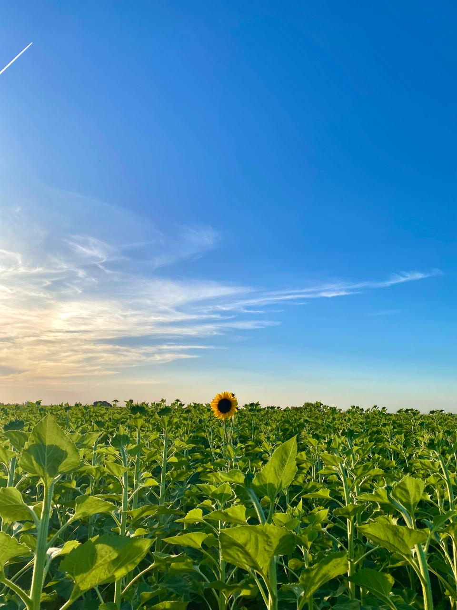
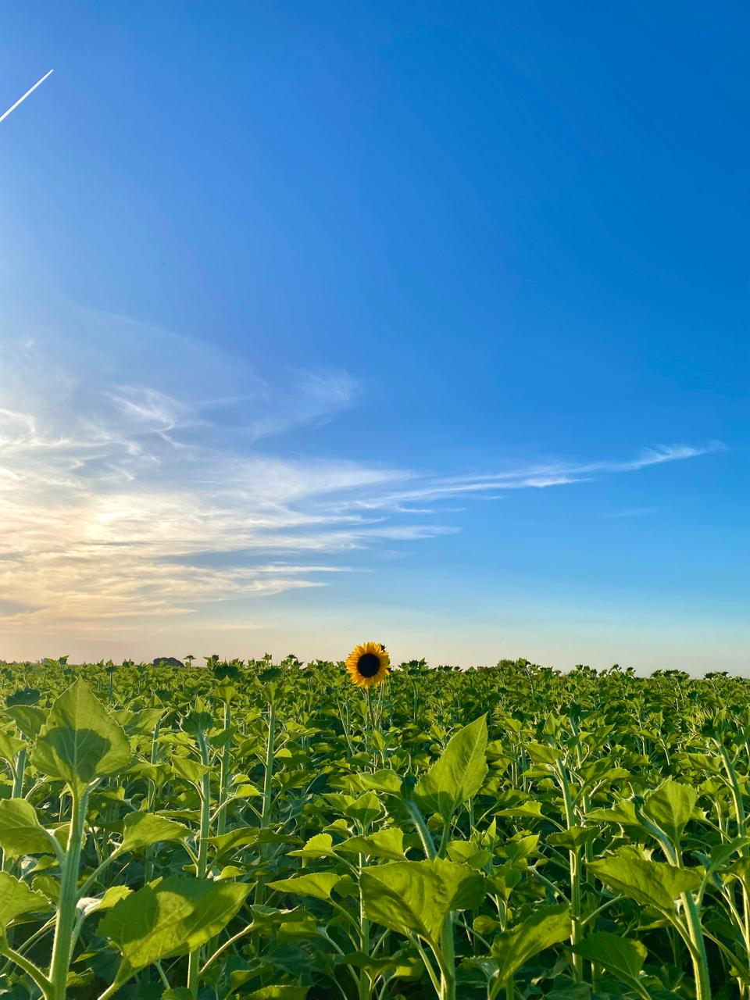
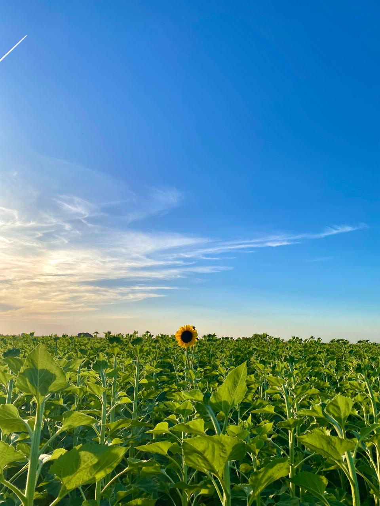

Inicio
Trivia
Fotografía
Música
Playlist
Aqui te dejo algunas de las fotos que mas me gustaron hacer:

¡Podés descubrir mas imágenes en mi
VSCO!
Estas son algunos sitios web relacionados con la fotografía que me interesan mucho.
(Hace clic en el que quieras para visitarlos).
 
